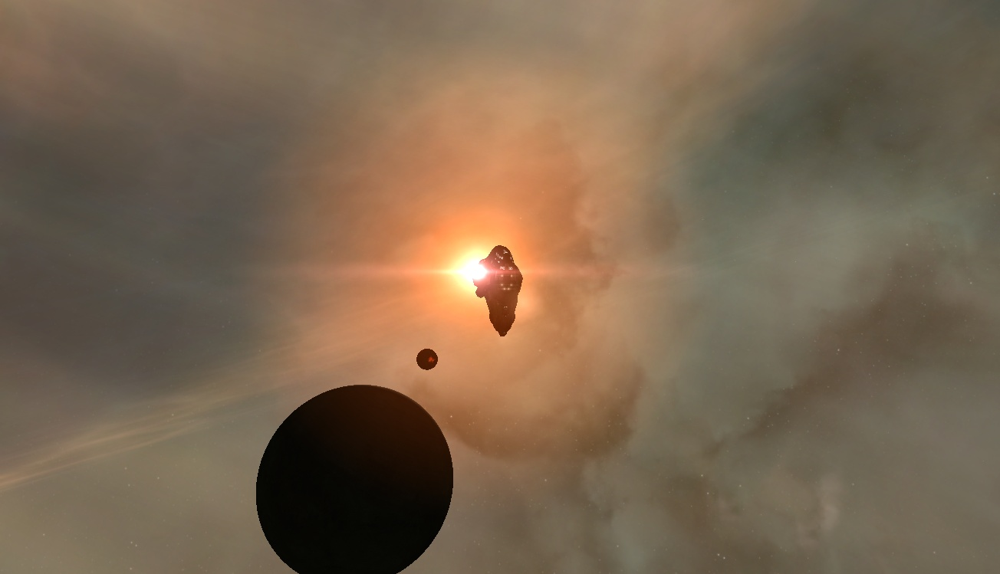
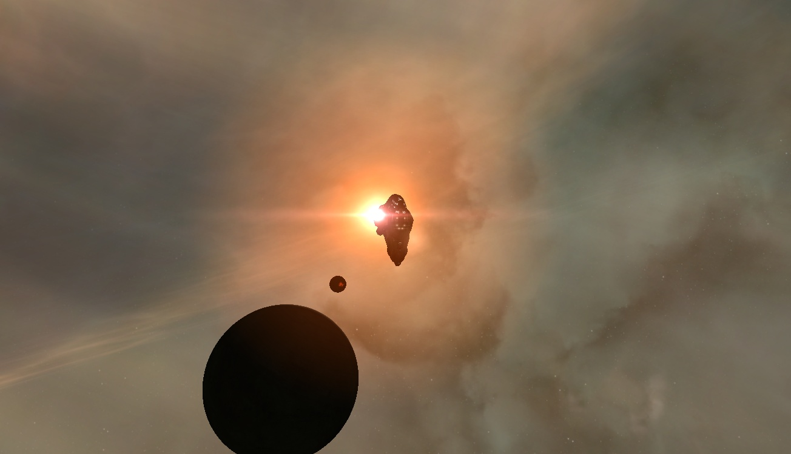

三体(Three-Body)
这是一个混乱的世界，在三体星球所在的这个恒星系中存在着三个太阳。
三个太阳的恒星运动模型，造成了附属行星上不规则的时间纪元。
三星远离则进入漫长冬夜，瞬间进入冰河时代，
三星靠近则带来酷暑。
三体世界的人类在漫长的混乱纪元中依靠脱水苟延残喘了下来，随着科技的不断进步，
三体人希望能够通过数学和物理模型来推测三个太阳的运动规律，以对付这些随时可来的天灾。
然而经过世代的努力，
三体人却发现三体本身就是一个不可解的模型。这个星系从一开始也不只三体地球一颗行星，然而其他的行星早已被三个太阳给毁灭或吞噬，
三体星球的存在只是一个巧合，而且迟早会被毁灭。
于是科学技术高度发达的三体人，决定开始寻找系外适合移居的星球，
机缘巧合之下，他们发现了地球...


 


三体和地球
地球国家领导阶层在得知三体人的入侵企图后，成立了Planetary Defense Council(PDC行星防御组织)想办法准备抵抗。
然而在民众间却产生了一些支持三体人入侵的组织，其中最大的组织名为Earth Three-body Organization（ETO地球三体组织）
在外星人的存在得到证实的情况下，社会科技进入了新一轮的爆发，其中大多集中在如何有效抵御三体人入侵的科技手段上。纳米技术，超级核能武器，
以及收到人伦争论的基因改造技术都被提上了议程。
同时随着科技的提升，地球人对外太空了解的越来越多，终于发现，我们所在的宇宙其实就是一片浩瀚无垠的，黑暗森林。